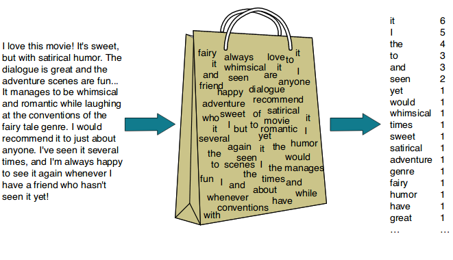

Introduction
In the realm of Natural Language Processing (NLP), one of the key challenges is to bridge the gap between the textual world of words and the numerical world of computers. We know that computers only understand in form of numbers (0s and 1s to be precise). So how do we make sense of human language words like maybe “cat” and “car” using algorithms and data structures? This is where word vectorization comes into play.
Why Do We Need Word Vectorization?
One of my favourite books is “Rich Dad, Poor Dad” by Robert Kiyosaki. Now, whenever I pick up this book, I end up taking away something from it and learning something from it. But what if I wanted to process this book using a computer? For a computer, it’s just a bunch of characters and symbols – meaningless patterns. Yet, this book contains knowledge, stories, and insights as we know already. It’s written in a language, and those words convey meaning and context.
So, how do we make computers understand this intricate web of human communication? The answer lies in the art and science of word vectorization. In essence, word vectorization is the process of converting words into numerical vectors, allowing machines to grasp the semantics, relationships, and nuances hidden within text.
So for today, I started out to unravel the various methods used for word vectorization, starting with the classics like One-Hot Encoding, Count Vectorization (Bag of Words), and TF-IDF (Term Frequency-Inverse Document Frequency). I then ventured into the realm of Word2Vec, and was about to go through Glove as well but it was starting to become too much overwhelming for a day.
One-Hot Encoding
To begin with, I started with the simplest method out there which was one-hot encoding. It takes each word in a given text and transforms it into a binary vector of 1s and 0s, where 1 means that a word is present in a sample and 0 means that it’s not. To understand it, I started out with a simple example.
Let’s consider the following three sentences:
| Sample | |
|---|---|
| 1. | I love coding and coding is fun |
| 2. | Programming is fascinating |
import pandas as pd
# Define the sentences
sentences = ["I love coding and coding is fun", "Programming is fascinating"]
# Tokenize the sentences and build a vocabulary
vocabulary = set(word for sentence in sentences for word in sentence.lower().split())
vocabulary.remove('is')
# Create a DataFrame to display one-hot vectors
one_hot_vectors = []
for sentence in sentences:
one_hot_vector = [1 if word in sentence.lower().split() else 0 for word in vocabulary]
one_hot_vectors.append(one_hot_vector)
# Create a DataFrame
df = pd.DataFrame(one_hot_vectors, columns=vocabulary, index = sentences)
# Display the DataFrame
print(df)
The output of the above code is as follows:
| fascinating | coding | programming | fun | love | |
|---|---|---|---|---|---|
| I love coding and coding is fun | 0 | 1 | 0 | 1 | 1 |
| Programming is fascinating | 1 | 0 | 1 | 0 | 0 |
However, as simple and intuitive this method may seem like there are some associated pros and cons with it which is why it is not used much in modern practices.
Pros
- Simplicity:
- One-Hot Encoding is straightforward to implement and understand, making it an excellent choice for basic text representation.
- Independence:
- Each word is represented independently, which can be useful in some machine learning models that assume feature independence.
Cons
- High Dimensionality:
- With a large vocabulary, eg. the English vocabulary, the vectors become high-dimensional, which can be computationally expensive and memory-intensive.
- Lack of semantics:
- One-Hot Encoding doesn’t capture any semantic relationships between words; all words are equidistant from each other in the vector space. It also doesn’t keep any count or gives any relevance to how many times a word appears in a sentence as can be seen in our first example.
- Sparsity:
- As we move towards larger vocabularies, most elements in the one-hot vectors are zeros, leading to a sparse representation, which can be inefficient in terms of storage and computation.
Thus, although One-Hot Encoding serves as a good starting point it is almost impractical in today’s machine learning requirements and thus we move forwards and explore some better methods like Count Vectorization and TF-IDF, which addressed some of these shortcomings if not all.
CountVectorzer (Bag of Words):
Moving forward, I read about the CountVectorizer or the Bag-of-Words model. In the realm of text representation, Count Vectorization, often referred to as the Bag of Words (BoW) model, takes a step beyond One-Hot Encoding. It not only acknowledges the presence or absence of words but also counts how many times each word appears in a document. This method creates a frequency-based numerical representation of text data, enabling machines to capture the importance of words based on their occurrence. We’ll explore this method as well on our previously defined sample texts.

from sklearn.feature_extraction.text import CountVectorizer
# Create a CountVectorizer instance
vectorizer = CountVectorizer()
# Fit and transform the data
X = vectorizer.fit_transform(sentences)
# Get the feature names (vocabulary)
feature_names = vectorizer.get_feature_names_out()
# Create a DataFrame to display count vectors
count_vectors = pd.DataFrame(X.toarray(), columns=feature_names, index = sentences)
# Display the DataFrame
print(count_vectors)
The output of the above code will be as follows:
| and | coding | fascinating | fun | is | love | programming | |
|---|---|---|---|---|---|---|---|
| I love coding and coding is fun | 1 | 2 | 0 | 1 | 1 | 1 | 0 |
| Programming is fascinating | 0 | 0 | 1 | 0 | 1 | 0 | 1 |
Pros
- Word Frequency:
- Count Vectorization retains information about the frequency of words in a document, which can be valuable for tasks like text classification.
- Simplicity:
- Just like One Hot Encoding, BoW is also relatively simpler and serves as a good starting point for many NLP tasks.
Cons
- Lack of Semantics:
- Similar to One-Hot Encoding, Count Vectorization doesn’t capture semantic relationships between words, treating them as independent entities.
- No word order:
- It disregards the order of words in the document, which can be crucial for tasks like sentiment analysis or language modeling.
- Vocabulary Size:
- The vocabulary size can be significant, leading to large feature spaces and potential computational inefficiency for bigger vocabularies.
- Sparsity:
- Just like OHE, even BoW suffers from sparsity issues.
- Stopwword Sensitivity:
- Common words like “the,” “and,” and “in” can dominate the vector representation but may not carry meaningful information. A common practice is to first remove any stop words and then use BoW in order to make sure stopwords don’t dominate our word vectors.
Thus, CountVectorizerorms a foundation for many text processing tasks, but it’s essential to recognize its limitations, especially when dealing with tasks that require capturing semantic meaning and context.
TF-IDF
While going through different methods for word vectorization, I came around the realization that the above two methods do not consider the importance of a word in a corpus and consider all words equally. In the realm of text representation, TF-IDF is a method that goes beyond simple word counts like these previous methods. It stands for Term Frequency-Inverse Document Frequency and is designed to capture not only the frequency of words in a document but also their importance in the context of a corpus which is where previous methods like One-Hot and CountVectorizer fail as they treated all words equally. As a result, both of those methods cannot distinguish very common words or rare words. TF-IDF gives a measure that takes the importance of a word into consideration depending on how frequently it occurs in a document or corpus.
To understand TF-IDF, first we need to understand two terms:
- Term Frequency (TF): This component measures the frequency of a term (word) within a document. It rewards words that appear frequently within a document. It can be calculated as the ratio of the word’s occurrences in a document to the total word count in that document. l
For example, consider our previous example I love coding and coding is fun. Here, TF(coding) is 1/6 as the word and has been ignored.
- Inverse Document Frequeny: This component measures the rarity or importance of a word across all the documents. It is the log of the inverse of the document frequency where document frequency tells us the number of documents which contain a particular word.
Thus, DF tells us about the proportion of documents which contain our word of interest. Thus, we inverse it to make sure that the more common a word is, example stopwords, the less score it gets and a logarithm is taken to dampen or reduce it’s effect on the final calculation.
$$IDF(term)=\log{\bigg(\frac{\text{Total number of documents}}{\text{Documents containing our term}}\bigg)}$$Thus, Inverse Document Frequency (IDF) is a measure of how unique or significant a word is across a collection of documents. It can be computed as the logarithm of the total number of documents divided by the number of documents in which the word occurs, effectively quantifying the word’s rarity and importance in the entire document collection.
Pros
-
Word Importance:
- TF-IDF captures the importance of words within specific documents and their significance in the broader corpus, making it suitable for tasks like text classification and information retrieval.
-
Weighting:
- It assigns weights to words based on their relevance, which can help algorithms focus on meaningful terms and disregard common stopwords.
-
Term Discrimination:
- It can effectively discriminate between terms that are common across all documents and those that are unique or rare, thus emphasizing the distinctive features of documents.
Cons
- Lack of Semantics:
- Like previous methods, TF-IDF doesn’t capture semantic relationships between words or consider word order.
- Lack of Interpretibility:
- The resulting TF-IDF values are not as intuitive or interpretable as raw word counts.
- Document Length Bias:
- Longer documents may have higher TF-IDF values simply due to their length, potentially leading to biased representations.
- Rare Term Issues:
- Extremely rare terms or typos may receive very high TF-IDF scores, which can lead to noise in the representation.
However, despite its limitations TF-IDF remains a valuable and widely used text representation technique, particularly for tasks that require capturing the importance of words within documents and distinguishing between common and rare terms and also solves issues from earlier methods like BoW or One-Hot Encoding.
Conclusion
In this blog, I delved into the world of text vectorization techniques, exploring three fundamental count-based methods: One-Hot encoding, CountVectorizer, and TF-IDF. I dissected these approaches, highlighting their inner workings and discussing the advantages and disadvantages of each.
One-Hot encoding, with its simplicity and binary representation, is a valuable tool for certain tasks. CountVectorizer, on the other hand, provides a straightforward way to capture word frequency, while TF-IDF takes it a step further by considering the importance of words within documents and across a corpus.
In the world of NLP, there’s no one-size-fits-all solution. Each method explored today has its strengths and weaknesses, and the art of NLP lies in selecting the right tool for the job. By understanding One-Hot encoding, CountVectorizer, and TF-IDF, one is equipped to make informed decisions that will drive the success of your text analysis projects. However, for more advanced NLP tasks that demand a deeper understanding of word semantics and context, methods like word embeddings and transformer-based models are often preferred which will be discussed later. Also, all the code used for this blog post can be found here
References:
- Part 5: Step by Step Guide to Master NLP – Word Embedding and Text Vectorization
- Vectorization Techniques in NLP
Photo by Embedding Projector on TensorFlow